1페이지 · 1~3컷
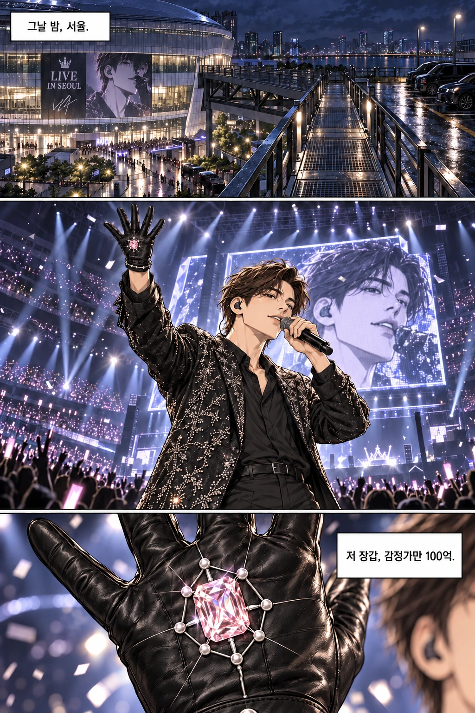
1 · O01
공연장 왼쪽, 주차장 오른쪽. 밤비가 막 그쳤고 옥상 정비 다리와 아래 도로가 함께 보인다.
무대사
2 · O02
젊은 가수가 오른손 보석 장갑을 들고 노래한다. 관객과 무대 규모를 보여준다.
무대사
3 · O03
검은 오른손 장갑의 중심 핑크 다이아. 손가락은 정상이며 보석은 하나.
무대사
85컷 · 24페이지. 준비 자료와 러프를 대조하고, 완성 그림에서 중요한 연속성 오류를 수정했다.
예상 독자 반응은 편집 가설이며 실제 독자 조사나 순위 검증 결과가 아니다.
출처와 연출 채택: 역대급 영지 설계사의 행동·반응, 광장의 소품을 쓰는 대화, 신의 탑의 목표·규칙 설명 구간을 참고했다. 공개된 해당 구간 일부를 확인한 범위이며 원작 그림·인물·대사는 복제하지 않았다.

공연장 왼쪽, 주차장 오른쪽. 밤비가 막 그쳤고 옥상 정비 다리와 아래 도로가 함께 보인다.
무대사
젊은 가수가 오른손 보석 장갑을 들고 노래한다. 관객과 무대 규모를 보여준다.
무대사
검은 오른손 장갑의 중심 핑크 다이아. 손가락은 정상이며 보석은 하나.
무대사
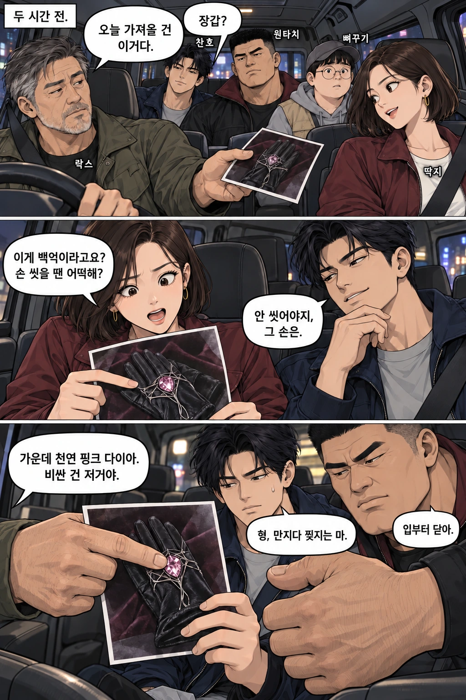
락스가 사진을 뒤로 건넨다. 다섯 얼굴을 한 번만 동시에 보여주고 인물명 자막을 처음 한 번 붙인다.
락스: 오늘 가져올 건 이거다. / 찬호: 장갑?
딱지가 사진을 받고 핑크 보석을 짚는다.
딱지: 이게 백억이라고요? 손 씻을 땐 어떡해? / 찬호: 안 씻어야지, 그 손은.
락스 손이 보석 부분을 짚고 찬호는 원타치의 큰 손과 사진을 비교한다.
락스: 가운데 천연 핑크 다이아. 비싼 건 저거야. / 찬호: 형, 만지다 찢지는 마. / 원타치: 입부터 닫아.
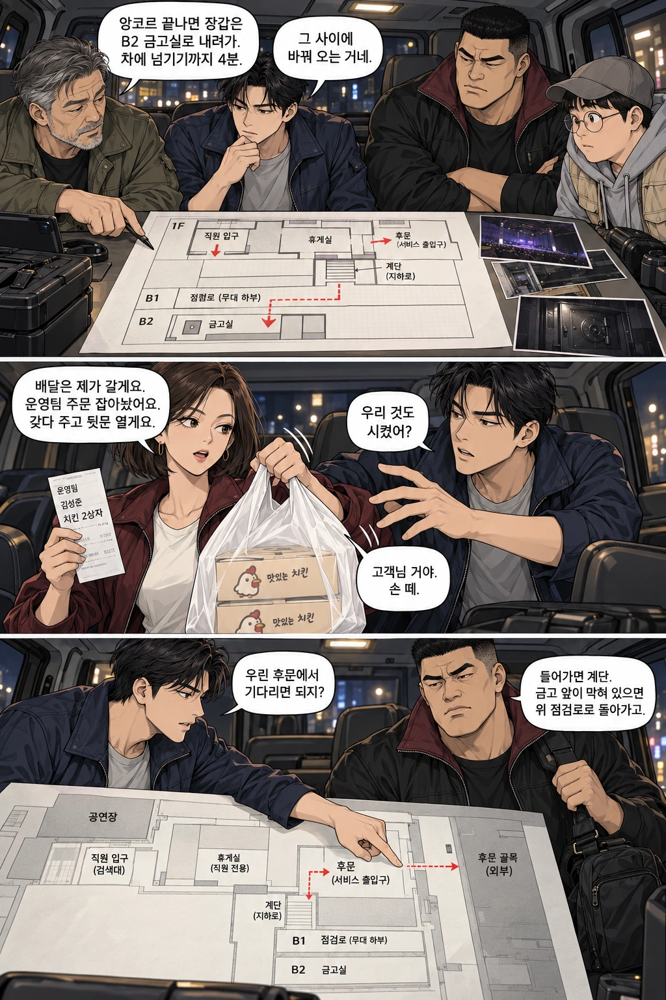
펼친 공연장 서비스 구역 도면에 직원 입구·휴게실·후문·계단·B1 점검로·B2 금고실이 표시된다. 사진과 장비는 탁자 위.
락스: 앙코르 끝나면 장갑은 B2 금고실로 내려가. 차에 넘기기까지 4분. / 찬호: 그 사이에 바꿔 오는 거네.
딱지가 주문 영수증 '운영팀 / 김성준 / 치킨 2상자'와 치킨용 흰 비닐봉투를 확인한다.
딱지: 배달은 제가 갈게요. 운영팀 주문 잡아놨어요. 갖다 주고 뒷문 열게요. / 찬호: 우리 것도 시켰어? / 딱지: 고객님 거야. 손 떼.
찬호가 도면의 후문 골목을 짚고 원타치는 작은 하강 가방을 어깨에 멘다.
찬호: 우린 후문에서 기다리면 되지? / 원타치: 들어가면 계단. 금고 앞이 막혀 있으면 위 점검로로 돌아가고.
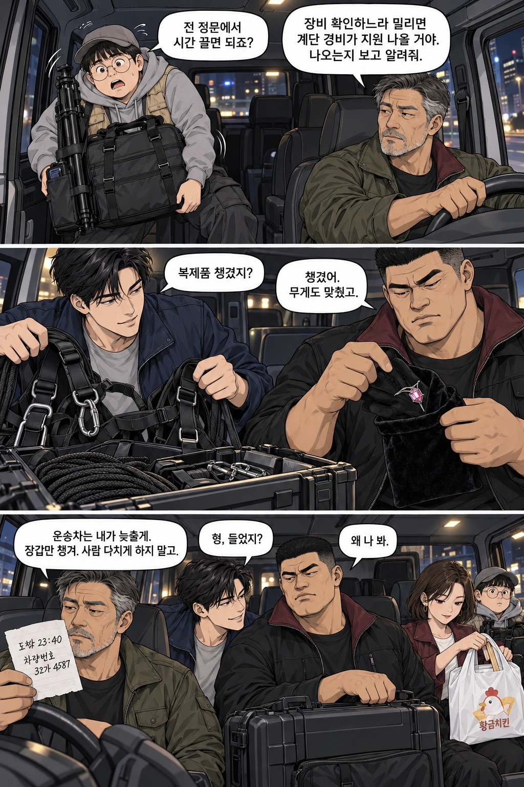
뻐꾸기가 카메라 가방을 들다 무거워 휘청한다. 옆 포켓에 큰 삼각대, 별도 작은 배터리 주머니.
뻐꾸기: 전 정문에서 시간 끌면 되죠? / 락스: 장비 확인하느라 밀리면 계단 경비가 지원 나올 거야. 나오는지 보고 알려줘.
찬호가 허리·다리 하네스와 줄, 보호 케이스를 순서대로 넣는다. 원타치는 모양·무게가 같은 복제 장갑을 작은 벨벳 주머니에 넣는다.
찬호: 복제품 챙겼지? / 원타치: 챙겼어. 무게도 맞췄고.
락스가 운송차 도착시간과 차량번호가 적힌 메모를 본 뒤 모두 하차할 준비를 한다. 딱지가 젓가락을 봉투에 넣는다.
락스: 운송차는 내가 늦출게. 장갑만 챙겨. 사람 다치게 하지 말고. / 찬호: 형, 들었지? / 원타치: 왜 나 봐.
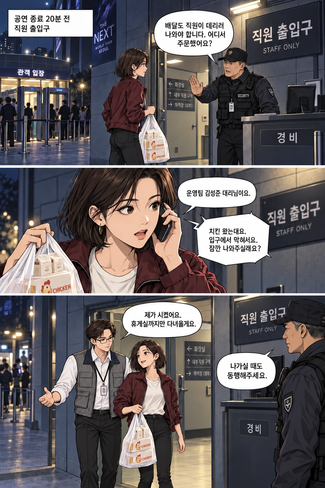
딱지의 치킨용 흰 비닐봉투, 직원 출입구 표찰, 경비 데스크가 함께 보인다. 정면 관객 검색대는 별도 입구다.
경비: 배달도 직원이 데리러 나와야 합니다. 어디서 주문했어요?
딱지가 김 대리 주문 내역을 확인하며 전화한다.
딱지: 운영팀 김성준 대리님이요. / 딱지, 전화: 치킨 왔는데요. 입구에서 막혀서요. 잠깐 나와주실래요?
김 대리가 출입증을 경비에게 보이고 딱지를 안쪽으로 안내한다.
김 대리: 제가 시켰어요. 휴게실까지만 다녀올게요. / 경비: 나가실 때도 동행해주세요.
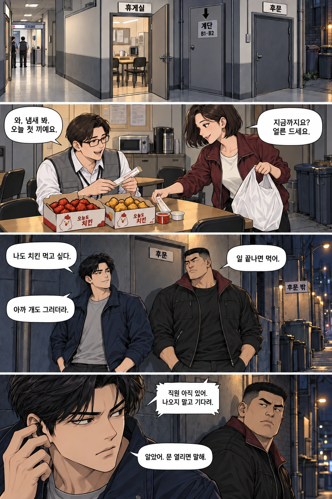
입구를 등지고 안으로 보면 왼쪽 휴게실, 앞쪽 후문, 오른쪽 꺾인 직원 계단. 휴게실 문에서 후문 밖은 안 보이고, 정면 검색대는 모퉁이 너머다.
무대사
딱지가 봉투에서 치킨 두 상자를 꺼내 탁자에 놓는다. 같은 봉투에서 포장 젓가락과 소스도 건넨다. 빈 봉투는 딱지가 접는다.
김 대리: 와, 냄새 봐. 오늘 첫 끼예요. / 딱지: 지금까지요? 얼른 드세요.
찬호·원타치는 후문 정면이 아닌 옆 벽의 그늘에 대기한다. 손잡이 없는 외부 철문과 '후문' 표찰이 보인다.
찬호: 나도 치킨 먹고 싶다. / 원타치: 일 끝나면 먹어. / 찬호: 아까 걔도 그러더라.
찬호가 수신기를 누르며 문을 살피고 원타치는 발을 옮기려다 멈춘다.
딱지, 무전: 직원 아직 있어. 나오지 말고 기다려. / 찬호: 알았어. 문 열리면 말해.
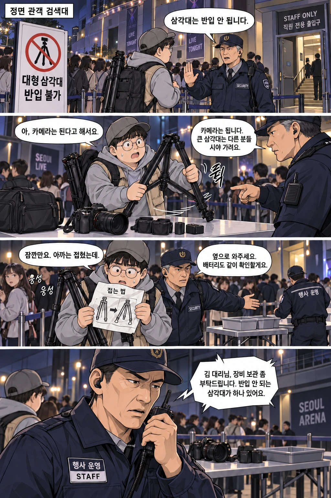
뻐꾸기가 관객 줄 앞에 선다. 안내판에 '대형 삼각대 반입 불가'가 있고 계단 쪽 직원 문을 가까이 보여준다.
경비: 삼각대는 반입 안 됩니다.
카메라·큰 삼각대·배터리 주머니가 탁자 위에 나온다. 뻐꾸기는 접으려다 반대로 펼친다.
뻐꾸기: 아, 카메라는 된다고 해서요. / 경비: 카메라는 됩니다. 큰 삼각대는 다른 분들 시야 가려요.
뻐꾸기가 삼각대에 달린 '접는 법' 종이를 뒤집어 보며 우물거린다. 뒤 줄이 밀리고 책임자가 별도 검사대를 펴고 있다.
뻐꾸기: 잠깐만요. 아까는 접혔는데. / 경비: 옆으로 와주세요. 배터리도 같이 확인할게요.
책임자가 추가 검사대를 열면서 김 대리를 먼저 부른다.
책임자, 무전: 김 대리님, 장비 보관 좀 부탁드립니다. 반입 안 되는 삼각대가 하나 있어요.
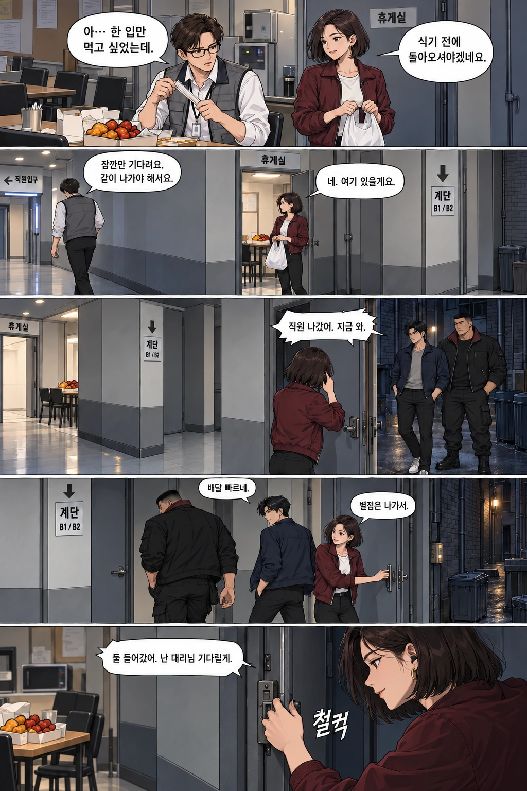
김 대리가 젓가락을 막 뜯으려다 무전을 듣고 내려놓는다. 딱지는 빈 봉투를 든 채 있다.
김 대리: 아… 한 입만 먹고 싶었는데. / 딱지: 식기 전에 돌아오셔야겠네요.
김 대리가 정면 쪽 모퉁이로 간다. 딱지는 휴게실 문 안에서 기다리는 척한다.
김 대리: 잠깐만 기다려요. 같이 나가야 해서요. / 딱지: 네. 여기 있을게요.
딱지가 모퉁이가 빈 것을 본 뒤 후문을 안쪽에서 연다. 문날개가 벽 쪽으로 열리고 남자들은 바깥 그늘에 있다.
딱지, 무전: 직원 나갔어. 지금 와.
원타치가 먼저, 찬호가 뒤로 문턱을 넘는다. 딱지는 문을 잡는다. 골목·문턱·꺾인 계단을 함께 보여준다.
찬호, 작게: 배달 빠르네. / 딱지, 작게: 별점은 나가서.
두 남자가 계단 벽 뒤로 빠진 뒤 딱지가 문을 조용히 닫는다. 외부 잠금 철컥이 나고 휴게실 쪽은 여전히 비어 있다.
딱지, 무전: 둘 들어갔어. 난 대리님 기다릴게.
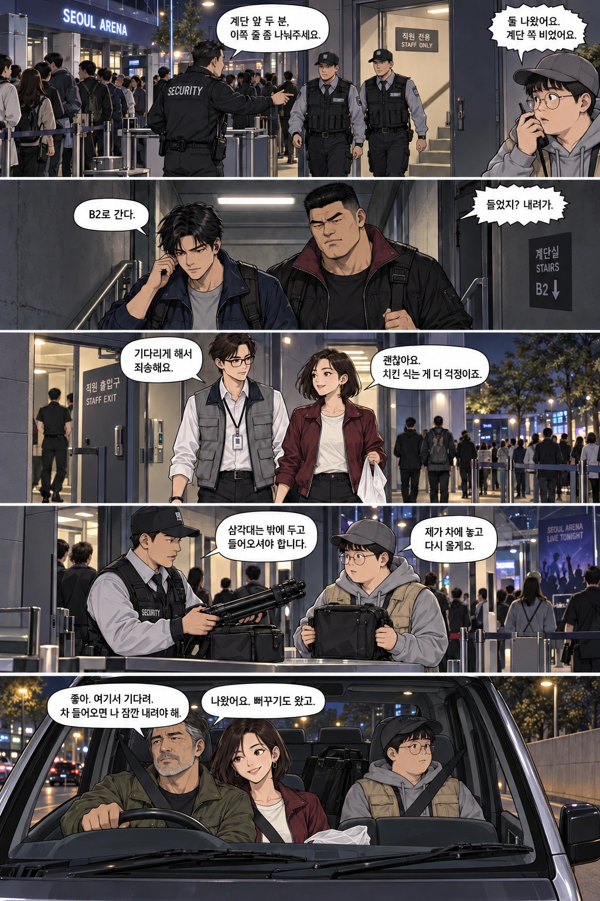
검색 책임자가 길어진 줄을 나누도록 직원 문 쪽 경비 둘을 부른다. 경비들이 실제로 직원 문을 나와 정면 검사대로 이동한다.
책임자: 계단 앞 두 분, 이쪽 줄 좀 나눠주세요. / 뻐꾸기, 무전: 둘 나왔어요. 계단 쪽 비었어요.
찬호·원타치가 문 안쪽 대기 지점에서 무전을 듣고 내려간다.
락스, 무전: 들었지? 내려가. / 찬호, 무전: B2로 간다.
김 대리가 휴게실에 돌아와 기다리던 딱지와 함께 직원 출입구로 걸어간다. 딱지 손에는 빈 흰 비닐봉투가 있다.
김 대리: 기다리게 해서 죄송해요. / 딱지: 괜찮아요. 치킨 식는 게 더 걱정이죠.
경비가 접힌 삼각대와 가방을 뻐꾸기에게 돌려준다. 뻐꾸기는 관객석에 들어가지 않고 자진 귀가한다.
경비: 삼각대는 밖에 두고 들어오셔야 합니다. / 뻐꾸기: 제가 차에 놓고 다시 올게요.
딱지와 뻐꾸기가 밴에 돌아온다. 락스는 운전석에서 직원 차량 진입로를 보고 있다. 빈 치킨 봉투는 앞좌석 아래, 장비가방은 뒤쪽.
딱지: 나왔어요. 뻐꾸기도 왔고. / 락스: 좋아. 여기서 기다려. 차 들어오면 나 잠깐 내려야 해.
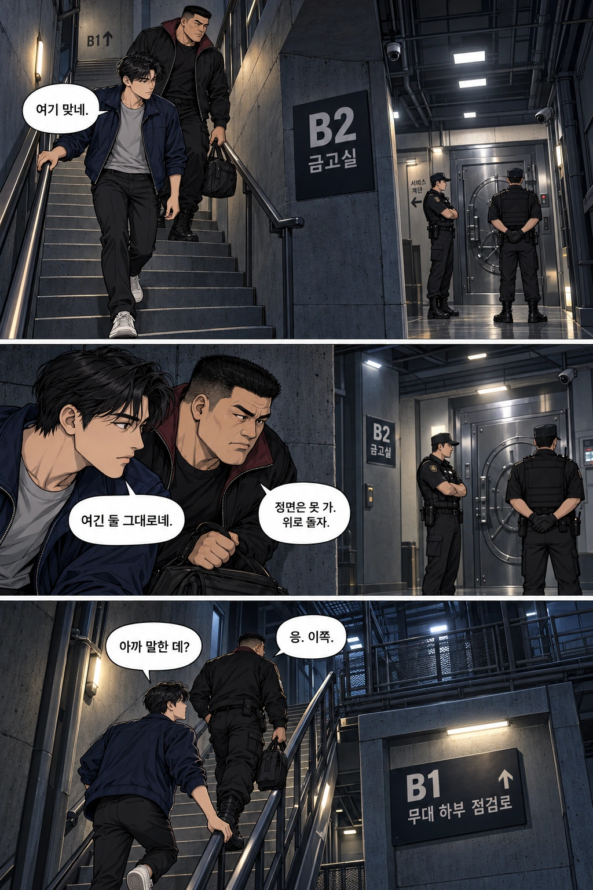
계단은 아래로 향하며 B1을 지나 B2 표찰 앞에 도착한다. 앞쪽 방은 금고실, 왼쪽 뒤로 올라가는 서비스 계단이 연결된다.
찬호: 여기 맞네.
금고실 밖에 별도 경비 둘이 남아 있다. 찬호·원타치는 계단 코너 뒤에서 보며 노출되지 않는다.
찬호: 여긴 둘 그대로네. / 원타치: 정면은 못 가. 위로 돌자.
원타치가 뒤로 물러나 B1 기술 통로로 향한다. 찬호가 P06 도면과 같은 표찰을 보고 따라간다.
찬호: 아까 말한 데? / 원타치: 응. 이쪽.
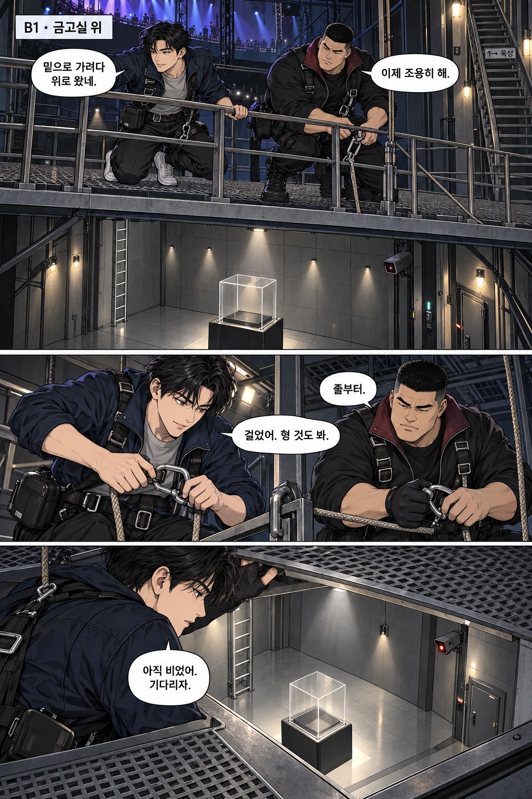
무대 아래 기술 통로에서 금고실 천장 위 점검 발판으로 이어진다. 오른쪽 서비스 계단은 옥상까지, 발판 아래가 B2 금고실. 무대 빛은 틈으로만 들어온다.
찬호: 밑으로 가려다 위로 왔네. / 원타치: 이제 조용히 해.
두 사람이 하네스와 이동 중 안전줄을 고정 구조물에 연결한다. 별도 장갑 보호 케이스는 찬호 허리 안쪽에 있다.
원타치: 줄부터. / 찬호: 걸었어. 형 것도 봐.
작은 점검 덮개 아래로 내부를 본다. 찬호는 뚜껑만 조금 열고 움직임을 멈춘다. 바닥·받침·외부 문·카메라·회수 사다리를 한 공간에 보여준다.
찬호: 아직 비었어. 기다리자.
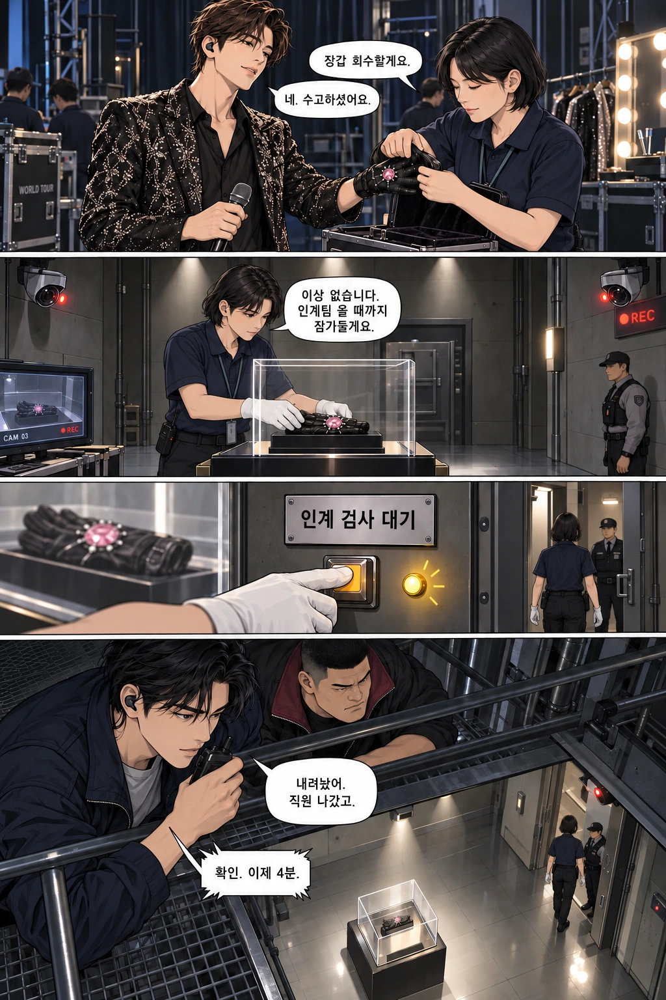
앙코르가 끝나고 의상 담당자가 가수의 오른손 장갑을 벗겨 벨벳 운송 케이스에 넣는다.
담당자: 장갑 회수할게요. / 가수: 네. 수고하셨어요.
담당자가 운송 케이스에서 장갑을 꺼내 중앙 받침에 놓고 투명 덮개를 닫는다. 벽 카메라는 작동하고 녹화 표시등이 켜져 있다.
담당자: 이상 없습니다. 인계팀 올 때까지 잠가둘게요.
담당자 손이 '인계 검사' 스위치를 누른다. 덮개 옆 작은 황색 등이 느리게 깜빡인다. 담당자는 문을 닫고 밖 경비에게 합류한다.
무대사
찬호가 담당자 퇴실과 문이 닫힌 것을 직접 확인하고 무전한다.
찬호, 무전: 내려놨어. 직원 나갔고. / 딱지, 무전: 확인. 이제 4분.
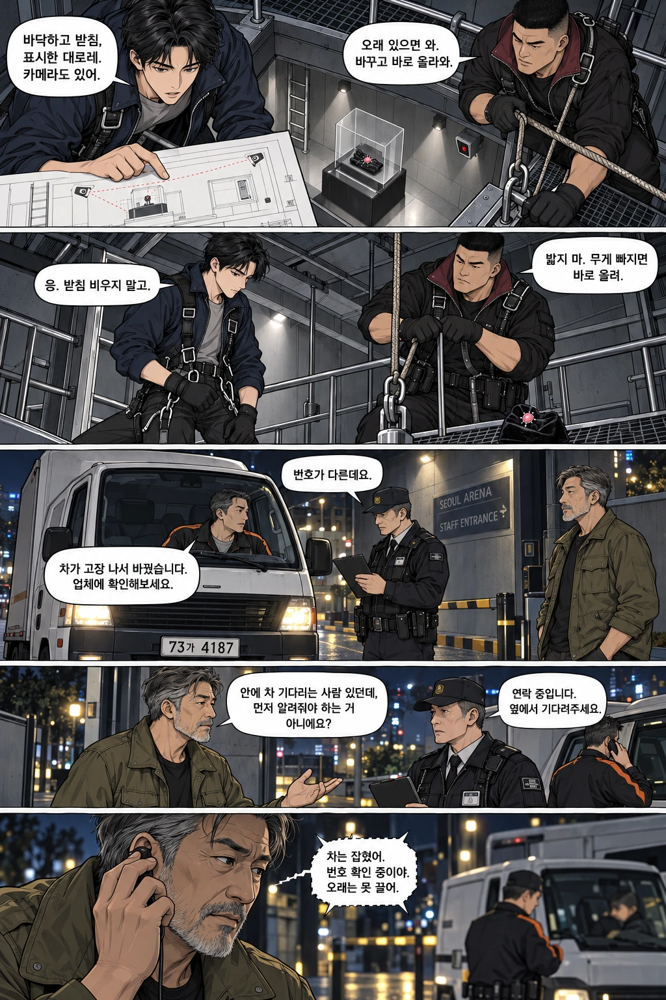
찬호가 준비 도면의 센서 표시와 아래 받침을 대조한다. 벽 카메라도 확인하고 원타치가 회수 줄을 잡는다.
찬호: 바닥하고 받침, 표시한 대로네. 카메라도 있어. / 원타치: 오래 있으면 와. 바꾸고 바로 올라와.
원타치가 찬호의 하강 줄을 조절하고 자신은 발판 위에 남는다. 두 번째 하네스는 원타치의 이동 안전용이다. 작은 복제 주머니가 보인다.
원타치: 밟지 마. 무게 빠지면 바로 울려. / 찬호: 응. 받침 비우지 말고.
운송차가 들어와 정차한다. 입구 경비가 메모 번호와 차량 번호를 대조해 막는다. 락스는 밴에서 내려 뒤쪽 방문자 대기 위치에 선다.
경비: 번호가 다른데요. / 기사: 차가 고장 나서 바꿨습니다. 업체에 확인해보세요.
경비가 락스에게 길을 비켜 달라는 손짓을 하자 락스가 기다리며 질문한다. 기사는 확인 전화로 되돌아간다.
락스: 안에 차 기다리는 사람 있던데, 먼저 알려줘야 하는 거 아니에요? / 경비: 연락 중입니다. 옆에서 기다려주세요.
락스가 대기 위치에서 조용히 수신기에 말한다. 기사는 뒤에서 여전히 경비와 확인 중이다.
락스, 무전: 차는 잡혔어. 번호 확인 중이야. 오래는 못 끌어.
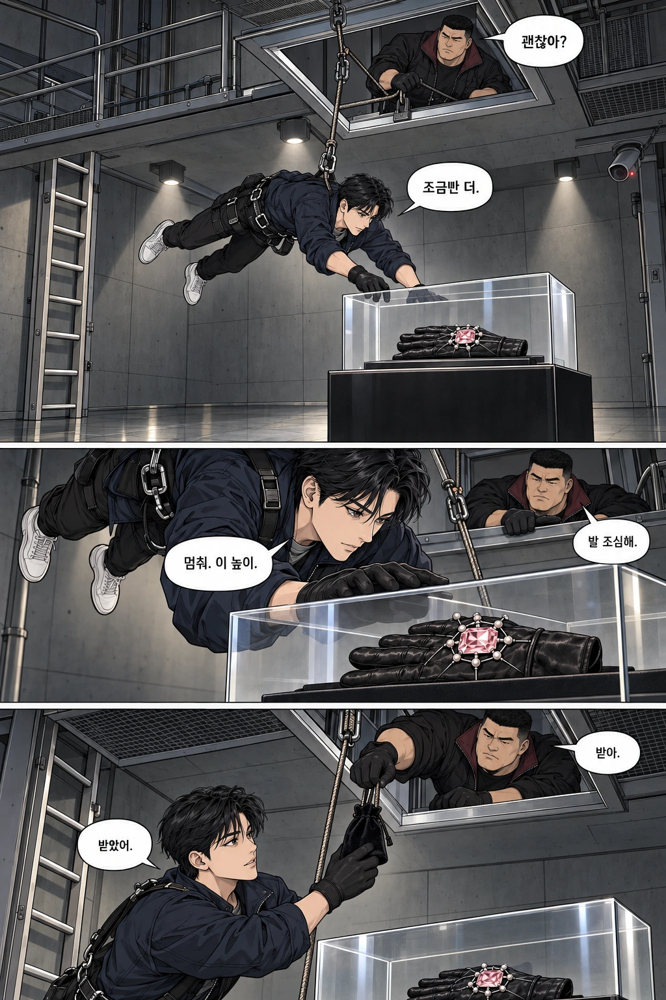
찬호만 천장 점검구에서 내려온다. 줄의 앵커·위 원타치·아래 받침·발과 바닥 사이 간격이 하나의 화면에 있다.
원타치: 괜찮아? / 찬호: 조금만 더.
찬호 두 발은 압력 바닥에 닿지 않는다. 손은 받침 덮개에 닿고 하네스가 몸을 지지한다.
찬호: 멈춰. 이 높이. / 원타치: 발 조심해.
원타치가 열린 점검구에서 작은 복제 주머니를 내려준다. 찬호가 받아 복제 장갑을 꺼내고 주머니는 허리 주머니에 넣는다.
원타치: 받아. / 찬호: 받았어.
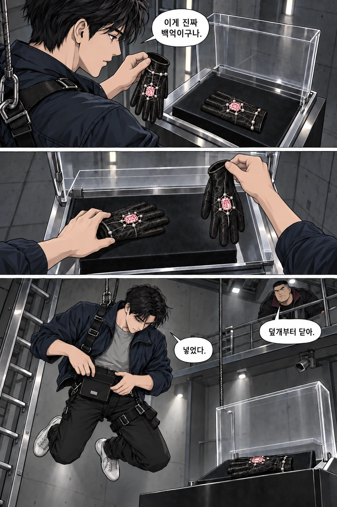
찬호가 투명 덮개를 열고 진품을 받침 위에 둔 채 복제 장갑을 옆에 들어 비교한다. 두 장갑의 크기·형태가 같다.
찬호, 작게: 이게 진짜 백억이구나.
복제를 받침에 먼저 대고 진품을 들어 올린다. 한 프레임에 장갑 두 개·찬호 손 두 개·받침 접점만 존재한다.
무대사
찬호가 진품을 허리의 작은 보호 케이스에 넣고 잠금부를 닫는다. 복제는 받침 위에 남아 있다.
찬호: 넣었다. / 원타치: 덮개부터 닫아.
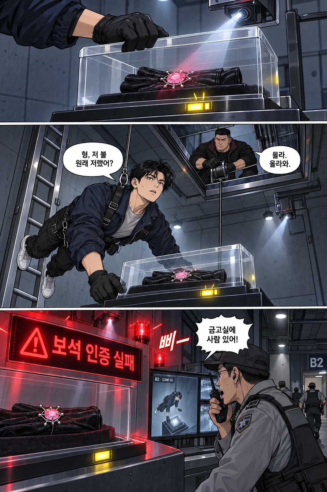
찬호 손이 덮개를 닫고, 앞서 켜진 황색 표시등이 점멸한다. 광학 검사 빛이 복제의 보석을 비춘다.
무대사
찬호가 황색 등과 위 원타치를 번갈아 본다. 원타치는 회수 장비를 잡고 즉시 당길 준비를 한다.
찬호: 형, 저 불 원래 저랬어? / 원타치: 몰라. 올라와.
빨간 '보석 인증 실패' 표시와 경보. 복도 경비의 작은 모니터에도 공중의 찬호가 보이고, 경비가 즉시 무전하며 금고문을 향한다.
경비, 무전: 금고실에 사람 있어!
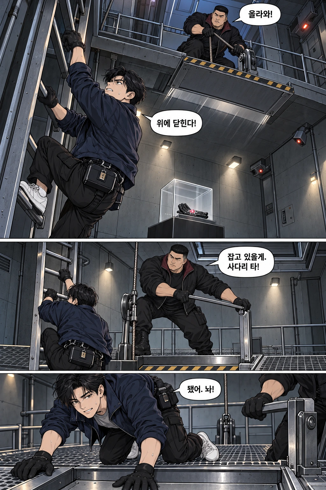
원타치가 회수 줄을 당기며 찬호가 고정 사다리를 잡고 올라간다. 점검구 자동 방화 덮개가 위에서 내려오기 시작한다.
원타치: 올라와! / 찬호: 위에 닫힌다!
원타치가 한쪽 발을 발판에 버티고 덮개의 긴 수동 손잡이를 당겨 잡는다. 회수 줄은 제동된 상태, 찬호는 사다리에 몸을 옮긴다.
원타치: 잡고 있을게. 사다리 타!
찬호가 마지막 단을 올라와 발판에 팔과 무릎을 올린다. 보호 케이스는 허리에서 잠겨 있다.
찬호: 됐어. 놔!
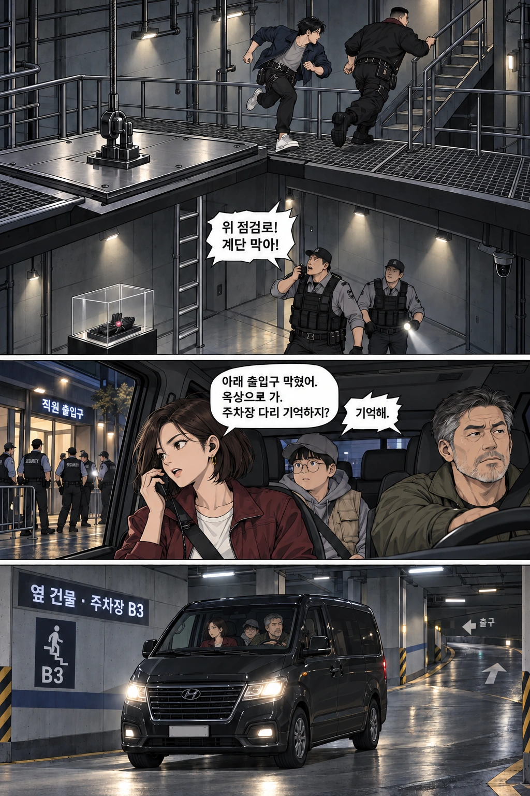
두 사람이 덮개를 놓고 서비스 계단으로 달린다. 아래 금고실에 들어온 경비가 닫힌 천장 덮개를 본다.
경비, 무전: 위 점검로! 계단 막아!
공연장 밖 대기 밴의 딱지가 직원 출입구에 모이는 경비를 직접 본다. 락스가 차량 진입로에서 밴으로 복귀해 운전석에 앉고, 밴은 옆 주차장 B3로 출발한다.
딱지, 무전: 아래 출입구 막혔어. 옥상으로 가. 주차장 다리 기억하지? / 찬호, 무전: 기억해.
밴이 주차장 경사로를 내려와 B3 계단문 가까이 정차한다. 락스 운전석, 딱지 조수석, 뻐꾸기 뒤 좌석. 문은 닫혀 있고 출구 경사로는 오른쪽이다.
무대사
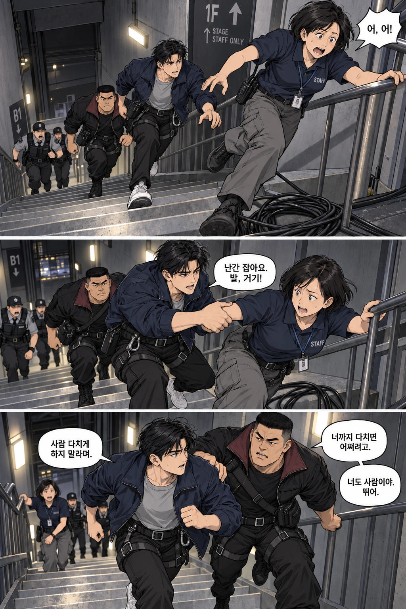
올라가는 두 사람 앞 계단참에서 내려오던 무대 직원이 케이블에 걸려 난간 쪽으로 기울어진다. 뒤 아래층에서 추격 경비가 올라오는 모습도 보인다.
직원: 어, 어!
찬호가 직원의 팔을 잡고 직원은 난간과 아래 단을 스스로 잡는다. 찬호가 잠시 멈춰 추격자와 거리가 줄어든다.
찬호: 난간 잡아요. 발, 거기!
직원이 안정된 뒤 찬호가 놓고 올라간다. 원타치가 찬호를 잡아당겨 같이 달린다.
원타치: 너까지 다치면 어쩌려고. / 찬호: 사람 다치게 하지 말라며. / 원타치: 너도 사람이야. 뛰어.
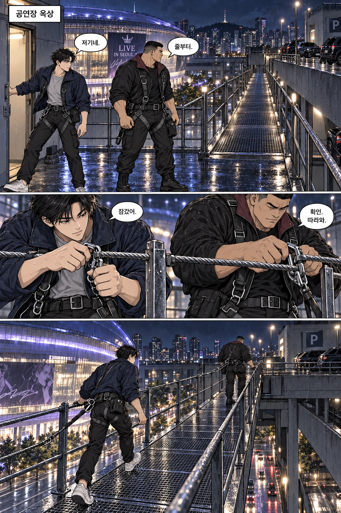
옥상문을 나온 두 남자. 정비 다리는 오른쪽 주차장까지 이어지고 뒤 옥상문은 추격자 경로다. 밤비가 남은 격자판이 젖어 있다.
찬호: 저기네. / 원타치: 줄부터.
두 사람이 각자의 하네스 연결고리를 다리의 고정 안전 와이어에 잠근다. 찬호 보호 케이스와 원타치 작은 장비가방은 그대로.
찬호: 잠갔어. / 원타치: 확인. 따라와.
원타치가 먼저 주차장 쪽 끝에 닿고 찬호는 뒤따른다. 아래 도로와 두 안전줄, 찬호가 밟을 판이 보인다.
무대사
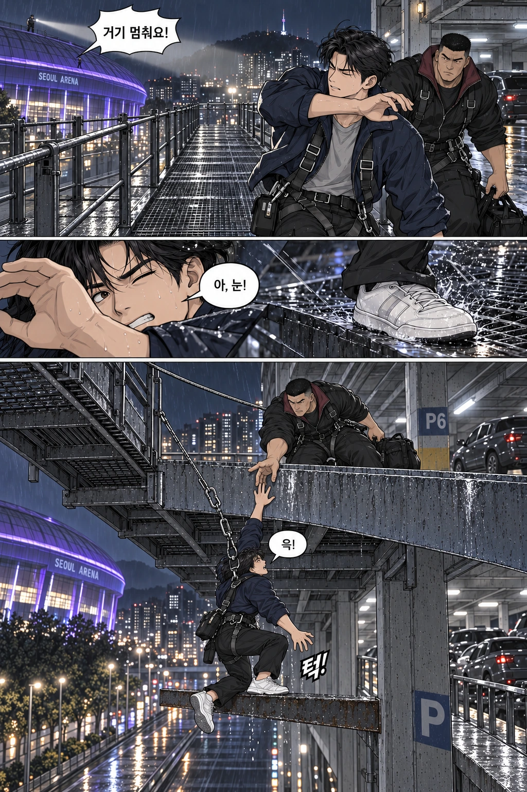
경비가 문을 나와 두 사람을 향해 손전등을 비춘다. 빛은 찬호 얼굴 방향으로 간다.
경비: 거기 멈춰요!
찬호가 빛을 피해 고개를 돌리는 순간 젖은 판 끝에서 신발이 미끄러진다. 발판이 갑자기 사라지지 않는다.
찬호: 아, 눈!
찬호가 주차장 끝 가까이 난간 아래로 짧게 떨어지고 연결 줄이 하네스를 잡아 정지한다. 와이어·고정점·원타치·도로를 같은 공간에 보여준다.
찬호: 윽!
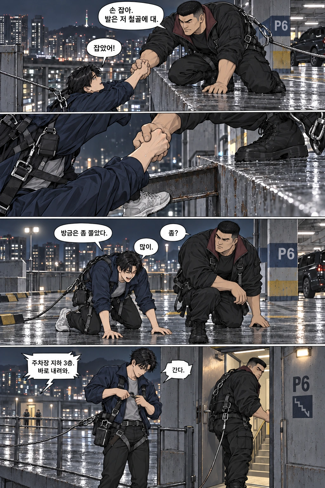
원타치가 자기 안전줄을 유지하고 무릎을 꿇어 아래 손을 내민다. 찬호가 잡는다.
원타치: 손 잡아. 발은 저 철골에 대. / 찬호: 잡았어!
찬호 발이 노출된 빔에 닿고 원타치가 팔을 당긴다. 줄은 계속 하네스를 지지한다.
무대사
찬호가 완전히 바닥에 올라와 네 발로 버틴다. 원타치는 뒤 다리를 보면서 먼저 숨을 고른다.
찬호: 방금은 좀 쫄았다. / 원타치: 좀? / 찬호: 많이.
찬호가 안전줄을 풀고 원타치가 계단문을 연다. 뒤 다리에서 경비가 아직 건너오고 있다.
딱지, 무전: 주차장 지하 3층. 바로 내려와. / 찬호, 무전: 간다.
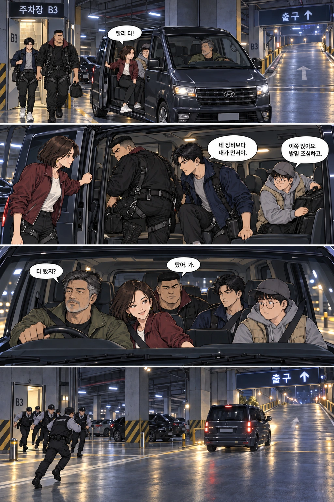
B3 계단문에서 두 남자가 나오고 가까운 밴의 옆문과 먼 출구 경사로가 보인다. 출구는 비어 있다.
딱지: 빨리 타!
딱지가 문을 잡는다. 원타치가 먼저, 찬호가 뒤로 탄다. 뻐꾸기는 뒤 좌석에서 장비 가방을 치워 자리를 만든다.
뻐꾸기: 이쪽 앉아요. 발밑 조심하고. / 찬호: 네 장비보다 내가 먼저야.
딱지가 문을 닫고 조수석으로 몸을 돌린다. 락스 운전석, 딱지 앞, 세 남자 뒤. 모두 실내에 있는 상태에서 출발한다.
락스: 다 탔지? / 원타치: 탔어. 가.
밴이 출구를 빠져나가고 뒤 계단문에 추격 경비가 도착한다. 경비는 아직 밴 뒤에 있어 차 앞을 막지 못한다.
무대사
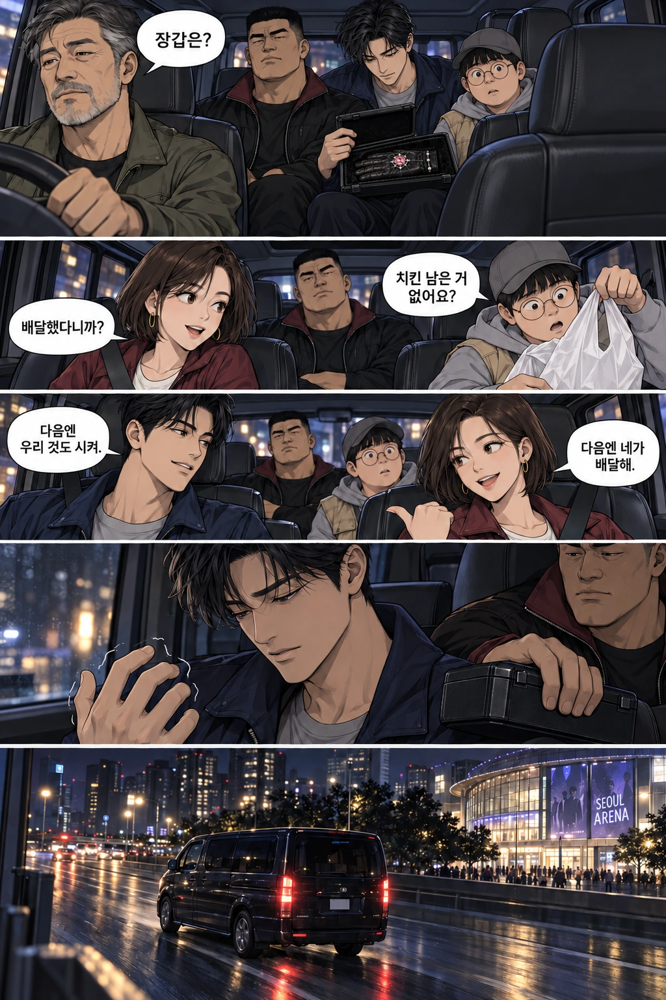
찬호가 자기 보호 케이스를 열어 진품 장갑을 확인한다. 검은 장갑과 핑크 보석은 무대·받침과 같다.
락스: 장갑은? / 찬호: 저보다 멀쩡해요.
뻐꾸기가 치킨을 찾으며 빈 흰 비닐봉투를 보고, 딱지가 앞에서 돌아본다. 음식은 차량 안에 없다.
뻐꾸기: 치킨 남은 거 없어요? / 딱지: 배달했다니까?
찬호가 앞좌석을 보며 말하고 딱지는 앞을 향해 턱으로 찬호를 가리킨다. 빈 봉투만 있고 치킨은 없다.
찬호: 다음엔 우리 것도 시켜. / 딱지: 다음엔 네가 배달해.
찬호는 장갑을 다시 넣고 자신의 정상 손이 아직 떨리는 것을 본다. 옆 원타치가 말없이 케이스를 받쳐준다.
무대사
다섯 명을 태운 밴이 공연장 빛에서 멀어진다. 다음 고해성사 시퀀스의 인물·동기를 추가하지 않는다.
무대사